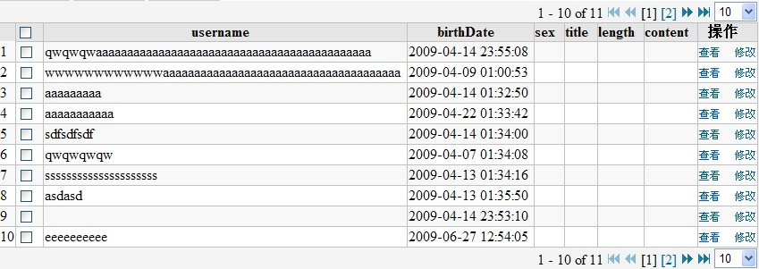

|
plugin_simpletable
介绍¶simpletable是rapid自带的一个分页组件,该组件主要使用rapid中的Page及PageRequest两个类结合JSTL进行分页.易于修改及灵活. 依赖¶现本tag依赖于jQuery.js 存放目录¶
主要文件介绍¶pageToolbar.tag文件 (相关默认值在此修改)¶该文件为jsp分页跳转的自定义tag,simpletable使用jsp2.0提供的tag file功能,将分页跳转的tag存放在WEB-INF/tags/simpletable/pageToolbar.tag, 该文件主要生成分页跳转的链接及改变pageSize的功能.该文件可以根据自己需要,灵活定制. 在jsp中如下引用: <%@ taglib tagdir="/WEB-INF/tags/simpletable" prefix="simpletable"%> 在后面即可使用 <simpletable:pageToolbar page="${page}"></simpletable:pageToolbar>simpletable.css文件¶该文件的table的css定义 simpletable.js文件¶该文件是一些方法的封装,提供toggleSort(),togglePage(),togglePageSize()该方法以支持排序,页数跳转,切换页大小的功能. 现该js依赖于jQuery.js 排序¶只需为表头th增加sortColumn属性，则simpletable.js会自动为表头增加排序的效果。 <thead class="tableHeader">
<tr>
<!-- 排序时为th增加sortColumn即可,new SimpleTable('sortColumns')会为tableHeader自动增加排序功能; -->
<th sortColumn="username" >username</th>
</tr>
</thead>simpletable的预览¶ 预览的源码¶ <simpletable:pageToolbar page="${page}"></simpletable:pageToolbar>
<table width="100%" border="0" cellspacing="0" class="gridBody">
<thead class="tableHeader">
<tr>
<th style="width:1px;"> </th>
<th style="width:1px;"><input type="checkbox" onclick="setAllCheckboxState('items',this.checked)"></th>
<!-- 排序时为th增加sortColumn即可,new SimpleTable('sortColumns')会为tableHeader自动增加排序功能; -->
<th sortColumn="username" ><%=Blog.ALIAS_USERNAME%></th>
<th sortColumn="birth_date" ><%=Blog.ALIAS_BIRTH_DATE%></th>
<th sortColumn="sex" ><%=Blog.ALIAS_SEX%></th>
<th sortColumn="title" ><%=Blog.ALIAS_TITLE%></th>
<th sortColumn="length" ><%=Blog.ALIAS_LENGTH%></th>
<th sortColumn="content" ><%=Blog.ALIAS_CONTENT%></th>
<th>操作</th>
</tr>
</thead>
<tbody class="tableBody">
<c:forEach items="${page.result}" var="item" varStatus="status">
<tr class="${status.count % 2 == 0 ? 'odd' : 'even'}">
<td>${page.thisPageFirstElementNumber + status.index}</td>
<td><input type="checkbox" name="items" value="checkbox"></td>
<td><c:out value='${item.username}'/> </td>
<td><c:out value='${item.birthDateString}'/> </td>
<td><c:out value='${item.sex}'/> </td>
<td><c:out value='${item.title}'/> </td>
<td><c:out value='${item.length}'/> </td>
<td><c:out value='${item.content}'/> </td>
<td>
<a href="${ctx}/pages/Blog/show.do?id=${item.id}&">查看</a>
<a href="${ctx}/pages/Blog/edit.do?id=${item.id}&">修改</a>
</td>
</tr>
</c:forEach>
</tbody>
</table>
<simpletable:pageToolbar page="${page}"></simpletable:pageToolbar>
|
► Sign in to add a comment